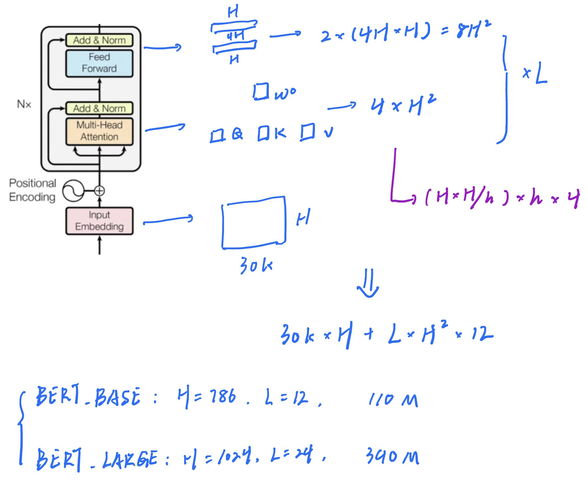
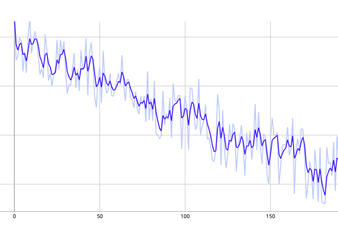
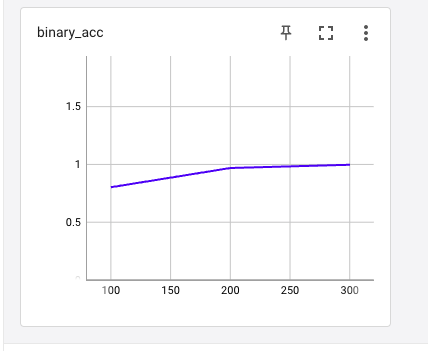
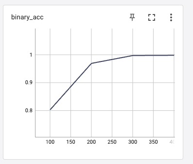

《自然语言处理》课程大作业报告
by 王元淳 2019300099 教育实验学院
Oct. 14th 2022
一、选题与分析
1.1 所选题目：
实现一个面向语义相似度匹配的临床术语标准化方法
1.2 题目描述：
临床术语标准化方法是医学统计中不可或缺的一项方法。临床上，关于同一种诊断、手术、药品、检查、化验、症状等往往会有成百上千种不同的写法。标准化（归一）要解决的问题就是为临床上各种不同说法找到对应的标准说法。有了术语标准化的基础，研究人员才可对电子病历进行后续的统计分析。本质上，临床术语标准化方法也是语义相似度匹配任务的一种。但是由于原词表述方式过于多样，单一的匹配模型很难获得很好的效果。本次评测任务主要目标是针对中文电子病历中挖掘出的真实诊断实体，并以《国际疾病分类 ICD-10 北京临床版v601》词表为标准进行语义标准化。在给定一诊断原词，要求给出其对应的诊断标准词。
1.3 题目分析：
任务：临床术语标准化
特点：标准化后标准词的数量确定（可以想到用classifacation解决）
注意：一个输入可能对应多个输出（考虑多分类、语义匹配、文本生成）
二、背景与方法调研
2.1 解决方案：
1.1 大语言模型方案：
方案一 分类
直接做成多分类对应相应标签
做n次二分类
方案二seq2seq
标准化后的词以词整体的粒度做token
方案三 文本生成
限制生成内容较难，不排除大力出奇迹的可能
1.2 偷鸡方法：直接做字符匹配
扫了一眼数据后，感觉可以直接用字符匹配度来分，应该也能有不错的效果。
2.2 方法背景
随着硬件设备运算能力增强，用大模型解决自然语言处理问题成为一种流行趋势。
由Transformer衍生出的各模型展现出了极强的表现。
basic knowledge of transformer
下面从经典transformer结构、时间复杂度、transformer的mode三个角度进行介绍。
architecture
Transformer是多个基本块堆叠而成的多层结构。
transformer blocks
基本块由multi-head attention, point-wise feed-forward, layerNorm以及残差连接层构成：

attention
attention，注意力机制，最常用的为additive attention（允许Q和K的长度不相同）和 dot-product attention（经典transformer采用的就是dot-product）。
attention由Q, K, V三个矩阵的相乘运算完成从输入到输出的过程。
单头attention过程

值得注意的是，这个过程中隐含的约束：
- key与value的数量相同
- query与key的维度相同
multi-head attention:
由于dot-product attention本身并没有可计算的参数，因此采用multi-head的方式来增加模型的学习能力。
将原本的维度投影到低维度，分别进行单头attention计算，最后concat到一起。

在经典transformer中采用的多头注意力机制，head的数量h = 8。
position-wise feed-forward layers
position-wise 也被叫作 point-wise ，指的是对序列中的每一个token在最后一个维度做线性展开。
经典transformer的embedding空间为512，其FF做法是512到64再到512 。
mask
在例如机器翻译的应用场景中，要考虑时间顺序，在做第k个token的加权时不应该出现k以后的token的贡献。
这也被称为是causal的。
三、算法选择与细节
3.1 数据观察
标准化词条共40474个，如果直接做多分类的话softmax会出问题
数据集
• Train_set: 5000对
• Val_set: 2000对
• Test_set: 10k条
数据量较少，用大模型做比较容易过拟合，生成模型效果应该不好。
3.2 算法选择
最终选择尝试用Bert做多次二分类的finetune
Bert结构：

huggingface开源了BERT-BASE-CHINESE的预训练模型，可以直接加载来在其基础上进行微调。
3.3 算法细节
3.3.1 单分类 vs 多分类
如果做成经典的单分类问题，思路应该是将BERT最后一层[CLS]的embedding拿出来，过linear到分类维度再过softmax。
在本题目场景中，有4w多个类别，这样的问题就是过完softmax以后由于分母太大导致所有的值都很小很小。
因此我的解决方案是每个句子做n次二分类。
具体来说，BERT最后一层[CLS]的embedding拿到以后，过linear到的形状，在每个2维度结果上做softmax当作是二分类的概率。
3.3.2 n次单分类存在的问题以及loss设计
在loss设计的时候，最简单的想法是将最终每次二分类的概率与真实分类结果做loss相加。
这样的思路固然没有问题，但是有一个细节十分容易被忽略，就是在我们把问题简化为n次二分类的时候，会出现正类与负类数量严重不均衡的问题。这将会导致按照正常思路loss相加迭代后出现每个二分类的正确率很高（99.9999%以上），但是整个句子结果预测正确的概率很低。
原因很简单，如果模型把所有的值都设置为0，那么平均四万多次二分类才会有一次出错，何乐而不为？
因此，我的loss设计为正loss与负loss的权重比为10000:1:
for each_result in result: if labels[0].detach().numpy()[loss_ite][0] == 1: loss = loss + args.weight * criterion(each_result, labels[0][loss_ite]) else: loss = loss + criterion(each_result, labels[0][loss_ite]) loss_ite += 1loss = loss / args.weight其中weight就是正负权重，我设置的是10000.
四、实验设计
4.1 数据处理
将所有的数据标签处理成[[0,1], [0,1] ... [0, 1]]的形式：
xxxxxxxxxxfor each_class in class_list: label_list = [[0, 1] for x in range(0, 40474)] try: # label_list.append(item_list.index(each_class)) label_list[item_list.index(each_class)] = [1, 0] except: continue target_json = {} target_json["text"] = each_json['text'] target_json["label"] = label_list data_json_list.append(target_json) ite = ite + 14.2 实验设置
loss的设计在3中已经说明，选择了二分类的MSE。
优化器选择Adam，lr = 1e-5
特别说明这里batchsize取1是将一个句子的四万多次二分类视作一个batch，后面会尝试batch加大是什么结果。
xxxxxxxxxxparser.add_argument('--data_dir', default='/data/wangyuanchun/NLP_course/dataset/post_processed', help='data_root')parser.add_argument('--batch_size', type=int, default=1, help='size of one batch') parser.add_argument('--epoch', type=int, default=100, help='epoch')parser.add_argument('--learning_rate', type=float, default=1e-5, help='learning_rate')parser.add_argument('--val_per_ite', type=int, default=100, help='validation per how many iterations')parser.add_argument('--model_save', default='/data/wangyuanchun/NLP_course/saved_models/', help='validation per how many iterations')parser.add_argument('--weight', type = int, default=5000, help='validation per how many iterations')4.3 评估指标
这里针对任务，重新设计了评价的指标。
作业要求中提到用F1来评价，但是这样会导致规范化少选和错选的得分是一样的。
因此我重新设计了一种评价的方式：在二分类层面和句子预测层面两个粒度的acc
xfor sentences, labels in zip(train_sentence_loader, train_label_loader): result = bert_classifier_model(sentences) loss_ite = 0 correct_cnt = 0 inco_cnt = 0 for each_result in result: if labels[0].detach().numpy()[loss_ite][0] == 1: if torch.argmax(each_result).item() == 0: correct_cnt += 1 else: inco_cnt += 1 else: if torch.argmax(each_result).item() == 1: correct_cnt += 1 else: inco_cnt += 1 acc = correct_cnt / (correct_cnt + inco_cnt) binary_acc_list.append(acc) if acc == 1: sentence_correct_cnt += 1 else: sentence_inco_cnt += 1 sentence_cnt += 1 if sentence_cnt == 100: breaksentence_acc = sentence_correct_cnt / (sentence_correct_cnt + sentence_inco_cnt)binary_acc = np.mean(binary_acc_list)print('validation end, binary_acc: {}; sentence_acc:{}'.format(binary_acc, sentence_acc))这里的binary_acc就是二分类粒度正确率，sentence_acc是句子粒度的正确率
4.4 实验结果

由于这里的batchsize给到了1，因此loss会出现波动，但总体还是在呈下降趋势。
二分类选择层面上的acc效果提升十分显著，向1收敛。


五、参考与致谢
技术参考
Thomas Wolf, et al.. 2020. Transformers: State-of-the-Art Natural Language Processing. In Proceedings of the 2020 Conference on Empirical Methods in Natural Language Processing: System Demonstrations, pages 38–45, Online. Association for Computational Linguistics.
Jacob Devlin, et al.. 2018. BERT: Pre-training of Deep Bidirectional Transformers for Language Understanding
算力支持：
清华大学知识工程实验室
中国人民大学数据工程与知识工程实验室
智谱AI